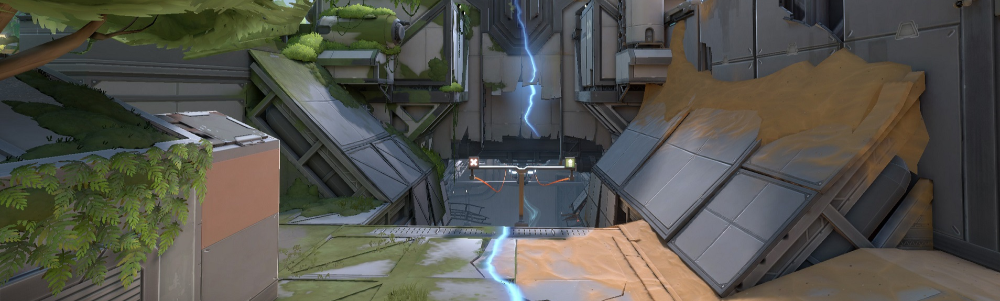
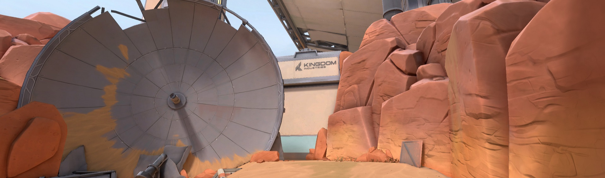

Segundo a Riot Games, Fracture tem um formato semelhante à letra “H”, com as duas pontas do mapa conectadas por tirolesas. Atacantes devem escolher qual dos lados vão atacar, enquanto o lado defensor deve planejar com mais calma: a defesa inicia a partida no meio do mapa.
Pela primeira vez em Valorant, o novo mapa terá dois biomas diferentes para cada lado do “H”. Ambos serão “contrastantes”, segundo a Riot: a bomba A está inserida em um ambiente desértico e árido, com estruturas enferrujadas e decadentes. No ponto B, a situação é invertida: o player vai navegar pela atmosfera de uma floresta exuberante. No meio de Fracture, fica o colisor central, logo abaixo de tirolesas que podem ser usadas pelos jogadores.
O fato da defesa nascer no meio do mapa, do ataque conseguir passar pelo meio do mapa. Mesmo com todas as outras coisas que eles já inventaram, nesse aqui, eles com certeza criaram um conceito novo
O segundo ponto é a predominância do lado Atacante: por permitir que os atacantes se dividam com facilidade, e por ter muitas entradas em seus Spike Sites, a Fracture tem a tendência de favorecer os times que estão no ataque.
Bombsite A: A resposta para os defensores pode vir de diferentes maneiras — que até conversam entre si. Composições fora do usual e posicionamentos arriscados se complementam para tornar a vida dos defensores um pouco mais fácil.
Bombsite B: Com a estratégia correta, é possível que os atacantes atinjam os defensores com ataques sincronizados em grupo, mas mesmo que a vantagem destes pareça muito maior, é importante lembrar que o centro permite que os defensores protejam as áreas de ataque de ambos os lados.